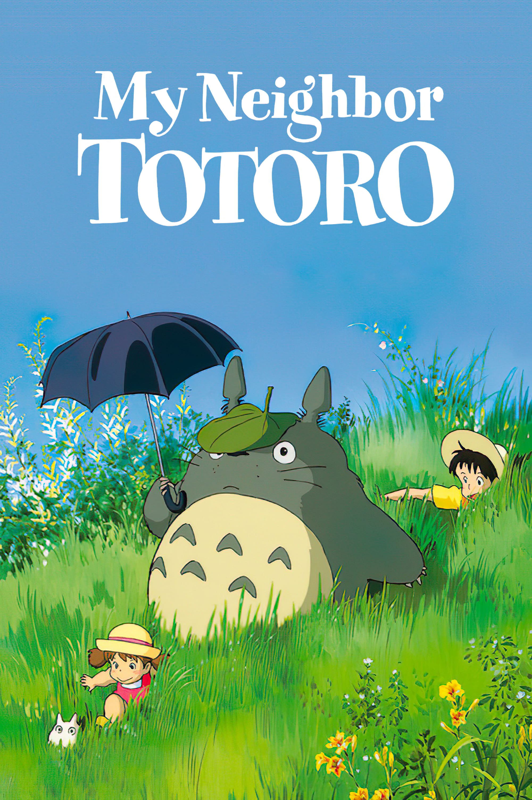
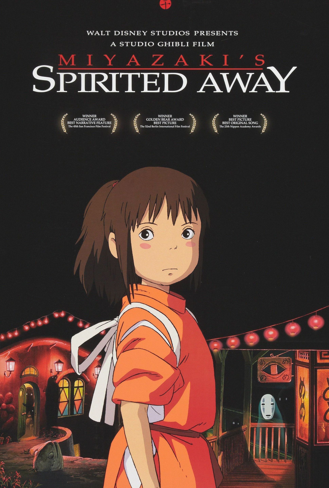
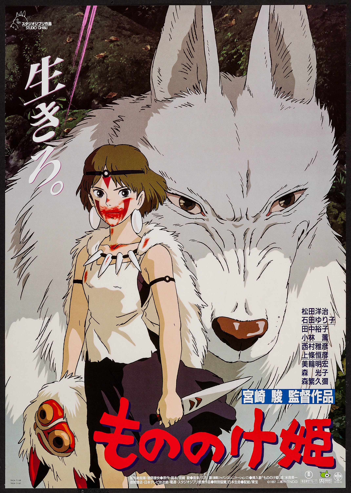

My Neighbor Totoro
Fantasy / Family | 86 min
Two sisters discover gentle forest spirits after moving to the countryside.
Best for familiesBrowse beloved Studio Ghibli movies, from quiet forest stories to sweeping fantasy adventures, with posters, release details, official links, and watch options.
Three beloved films that show Studio Ghibli's range, from gentle family fantasy to grand adventure.

Fantasy / Family | 86 min
Two sisters discover gentle forest spirits after moving to the countryside.
Best for families
Fantasy / Adventure | 125 min
A young girl enters a spirit world and fights to save her parents.
Best first watch
Fantasy / Historical | 134 min
A cursed prince is drawn into a conflict between humans and forest gods.
Best for fantasy fansStreaming availability may vary by region.
Swipe or scroll sideways to explore the full collection with official pages and watch links.


| Title / Watch | Year | Director | Genre | Duration | Rating |
|---|---|---|---|---|---|
| The Boy and the Heron | 2023 | Hayao Miyazaki | Fantasy / Drama | 124 min | 5/5 |
| The Wind Rises | 2013 | Drama / Historical | 126 min | 5/5 | |
| Earwig and the Witch | 2020 | Gorō Miyazaki | Fantasy / Family | 82 min | 3/5 |
| The Red Turtle | 2016 | Michaël Dudok de Wit | Fantasy / Drama | 80 min | 4/5 |
| When Marnie Was There | 2014 | Hiromasa Yonebayashi | Drama / Mystery | 103 min | 4/5 |
| The Tale of Princess Kaguya | 2013 | Isao Takahata | Fantasy / Drama | 137 min | 5/5 |
| Pom Poko | 1994 | Fantasy / Comedy | 119 min | 4/5 | |
| From Up on Poppy Hill | 2011 | Gorō Miyazaki | Drama / Romance | 91 min | 4/5 |
| Tales from Earthsea | 2006 | Fantasy / Adventure | 115 min | 3/5 | |
| The Borrower Arrietty | 2010 | Hiromasa Yonebayashi | Fantasy / Family | 94 min | 4/5 |
| Ponyo on the Cliff | 2008 | Hayao Miyazaki | Fantasy / Family | 101 min | 4/5 |
| Howl's Moving Castle | 2004 | Fantasy / Romance | 119 min | 5/5 | |
| Spirited Away | 2001 | Fantasy / Adventure | 125 min | 5/5 | |
| Princess Mononoke | 1997 | Fantasy / Historical | 134 min | 5/5 | |
| Porco Rosso | 1992 | Adventure / Comedy | 94 min | 4/5 | |
| Kiki's Delivery Service | 1989 | Fantasy / Family | 103 min | 5/5 | |
| The Cat Returns | 2002 | Hiroyuki Morita | Fantasy / Comedy | 75 min | 4/5 |
| Ghiblies Episode 2 | 2002 | Yoshiyuki Momose | Comedy / Slice of Life | 24 min | 3/5 |
| My Neighbors the Yamadas | 1999 | Isao Takahata | Comedy / Family | 104 min | 4/5 |
| Only Yesterday | 1991 | Drama / Romance | 118 min | 5/5 | |
| Whisper of the Heart | 1995 | Yoshifumi Kondō | Drama / Romance | 111 min | 5/5 |
| On Your Mark | 1995 | Hayao Miyazaki | Sci-Fi / Music Video | 7 min | 4/5 |
| My Neighbor Totoro | 1988 | Fantasy / Family | 86 min | 5/5 | |
| Castle in the Sky | 1986 | Fantasy / Adventure | 124 min | 5/5 | |
| Nausicaä of the Valley of the Wind | 1984 | Sci-Fi / Fantasy | 117 min | 5/5 | |
| Ocean Waves | 1993 | Tomomi Mochizuki | Drama / Romance | 72 min | 4/5 |
| Grave of the Fireflies | 1988 | Isao Takahata | Drama / War | 89 min | 5/5 |
| Notable Themes | |||||
| Nature & Environment | Spirits & Magic | Courage & Growth | |||
Spirited Away, Princess Mononoke, Howl's Moving Castle, The Boy and the Heron
My Neighbor Totoro, Ponyo on the Cliff, Kiki's Delivery Service
Grave of the Fireflies, The Wind Rises, Only Yesterday
Castle in the Sky, Nausicaä of the Valley of the Wind, Porco Rosso